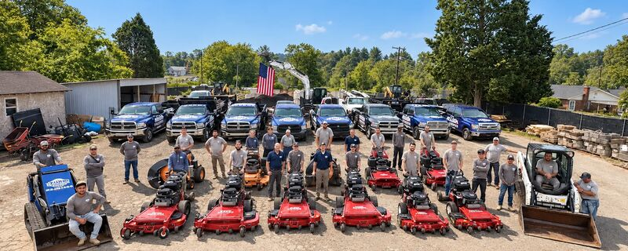
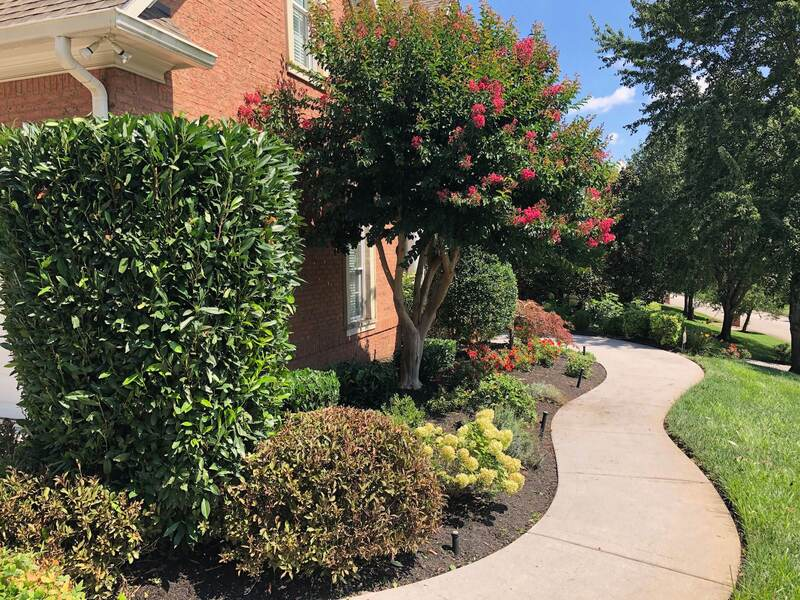

Hardscapes
Patios, fire pits, retaining walls and walkways built to last and designed to add real value to your home.
Explore Hardscapes
The Yard Force is a full-service landscaping and lawn care company built on excellence, integrity, and reliability. We take pride in our work, pay attention to the details, and believe every property deserves thoughtful care and quality service.
Our mission is to raise the standard of lawn care while helping beautify our neighborhoods and strengthen the communities we call home.
Patios, fire pits, retaining walls and walkways built to last and designed to add real value to your home.
Explore HardscapesForestry mulching and lot clearing, including steep, hard-to-reach ground with our remote-controlled mulcher.
Explore Land ClearingCustom beds, plantings, stone and mulch designed around your home and installed by our own crew.
Explore Landscape DesignMowing, edging, weed control, aeration and fertilization for homes and commercial properties, sharp all season.
Explore Lawn MaintenanceSprinkler and drip systems designed, installed and serviced to keep your lawn and beds healthy with less water.
Explore IrrigationFrom $100,000 outdoor living builds to estate grounds we maintain every week — a few of the projects we're proudest of.
“I was invited out to discuss progress and preferences throughout the build. The wall was built very well and details were better than I had expected.”Tess McHone · Google ReviewRead Client Stories
Our process is simple. Just contact us and let us know what services you are interested in, and we will be in touch with a free quote!

We received your request and will be in touch shortly with your free quote. Need us sooner? Call (865) 290-8815.

Forestry mulching typically runs $1,000–$4,000 for up to 1 acre: underbrush and small trees are mulched in place and the mulch stays on the ground. Full land clearing, which removes trees, stumps and roots for a bare, buildable site, runs roughly $9,000–$15,000 per acre. Price depends on the type of work requested, the machines needed, the grade of the land and location. Not sure which you need? Call (865) 290-8815 for a free on-site estimate.
These are wide, ballpark ranges, not a quote. Multiple factors affect the final price, including density, terrain and grade, access points to the site, the scope of work, materials and location. For an in-depth quote, it’s best for us to come out and see the property in person, so we can make sure you’re not being overcharged.
Forestry mulching uses a specialized machine to grind trees, brush, and vegetation on-site into a natural mulch layer. Unlike traditional clearing, there’s no hauling or burning — debris stays on your property as mulch, improving soil health. It’s faster, more eco-friendly, and often more affordable for East Tennessee properties.
Permit requirements vary by project size and location in Knox County. Most residential lot clearing under a certain acreage doesn’t require a permit, but larger projects or those near waterways may. We recommend checking with Knox County Engineering or your local municipality. The Yard Force can help guide you through the process.
Most residential land clearing jobs in the Knoxville area take 1–3 days. Larger acreage projects may take a week or more. Timeline depends on lot size, vegetation density, terrain, and which clearing method is used. We’ll give you a realistic timeline with your free estimate.
The Yard Force serves Knoxville and surrounding East Tennessee communities including Farragut, Maryville, Oak Ridge, Loudon, Lenoir City, Alcoa, and Sevierville. Call (865) 290-8815 to confirm we cover your area.